PROJECT 01
Thryve
의지가 약한 사람도 계속 쓰게 만드는 헬스 앱
문제헬스 앱은 이미 의지가 있는 사람을 위한 것이었습니다
사람들이 헬스 앱을 그만두는 주된 이유는 필요한 기능이 없거나, 동기를 유지할 장치가 없기 때문입니다. 경쟁 앱 세 개를 비교 분석해 보니 모두 이미 동기가 있는 사람에게 맞춰져 있었습니다. Strava는 분석이 깊어 초보자에게 부담이고, Fitbit은 기기가 없으면 기능이 크게 줄고, Pokémon Go는 사람을 움직이게 하지만 건강은 부산물이었습니다.
동기가 약한 다수에게 필요한 것은 더 많은 데이터가 아니라, 오늘 할 수 있는 작은 목표와 눈에 보이는 결과라고 판단했습니다. 착상은 웹툰 〈나 혼자만 레벨업〉의 "일일 퀘스트를 하면 성장하는" 구조에서 가져왔습니다.
원칙에서 규칙으로매니페스토를 먼저 쓰고, 화면 규칙을 거기서 뽑았습니다
디자인 전에 매니페스토를 썼습니다. 이 과정에서 Thryve를 "완전한 게임"이 아니라 "게임 요소가 있는 앱"으로 정리했습니다. 세 문장이 이후 모든 시각 결정의 기준이 됐습니다.
- Progress without shame, growth without guilt — 쉬었다고 벌주지 않는다
- Play for progression, not perfection — 물 한 잔, 스트레칭 한 번도 성과로 센다
- We believe in the power of play — 경쟁이 아니라 놀이로 움직이게 한다
| 단계 | 로봇 | 테두리 | 배경 도형 |
|---|---|---|---|
| 1 | 눈이 없음(막 태어남) + 입장 티켓 | 브론즈 | 브론즈 삼각형 |
| 2 | 처음 눈을 뜸(성장과 자각) | 실버 | 실버 사각형 |
| 3 | — | 골드 | 골드 오각형 |
| 4 | 왕관(최고 등급) | 에메랄드 | 에메랄드 육각형 |
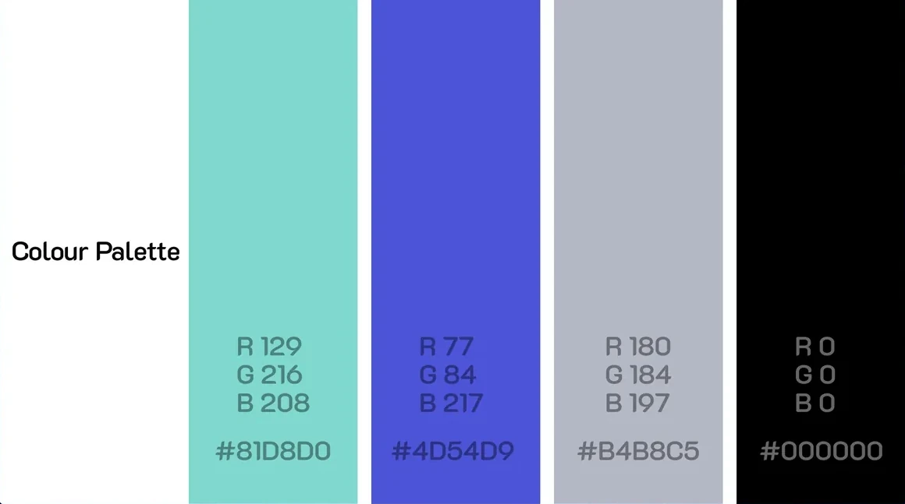
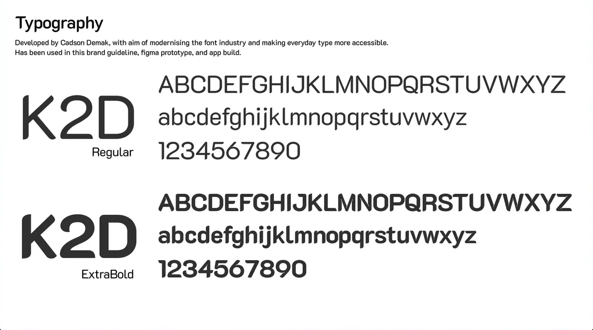
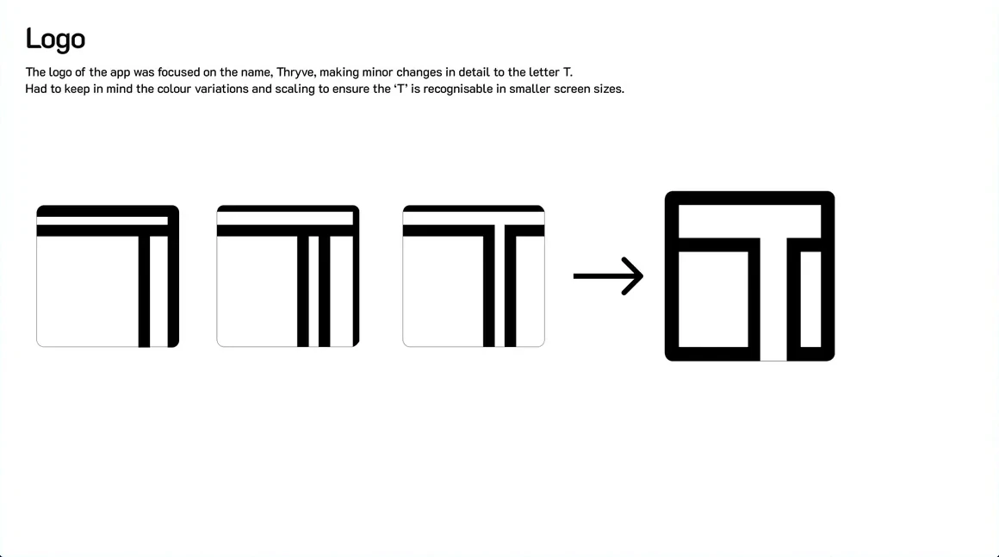
검증하고 고친 것원칙과 결과물이 어긋난 곳을 사용자가 먼저 찾았습니다
배지 시안을 Google Forms 피드백 설문으로 두 번 확인했습니다(라운드당 약 40명). 외형에 대한 인상을 묻는 방식이었고, 과제를 주고 행동을 보는 사용성 테스트는 하지 않았습니다.
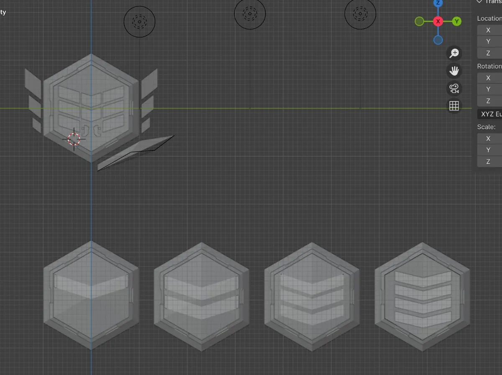
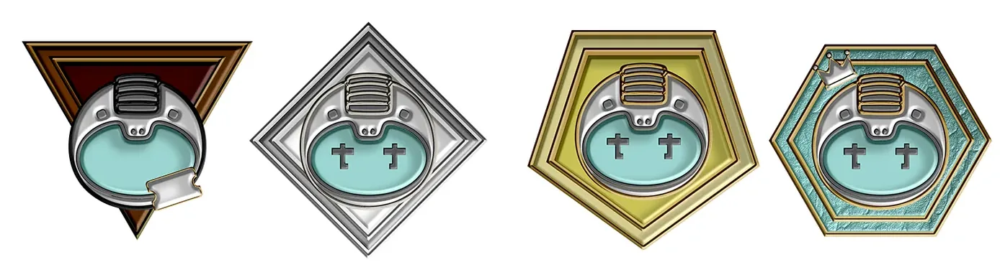
2차 피드백에서 로봇 배지는 대체로 좋은 반응을 얻었지만, "첫 로그인·7일 로그인 배지만 따로 논다"는 지적이 나왔습니다. 두 배지를 로봇 배지와 같은 시각 언어로 다시 맞췄습니다. 아바타도 처음의 사실적인 인체 모델이 놀이라는 성격과 맞지 않아 스타일라이즈드 휴머노이드로 바꿨습니다.
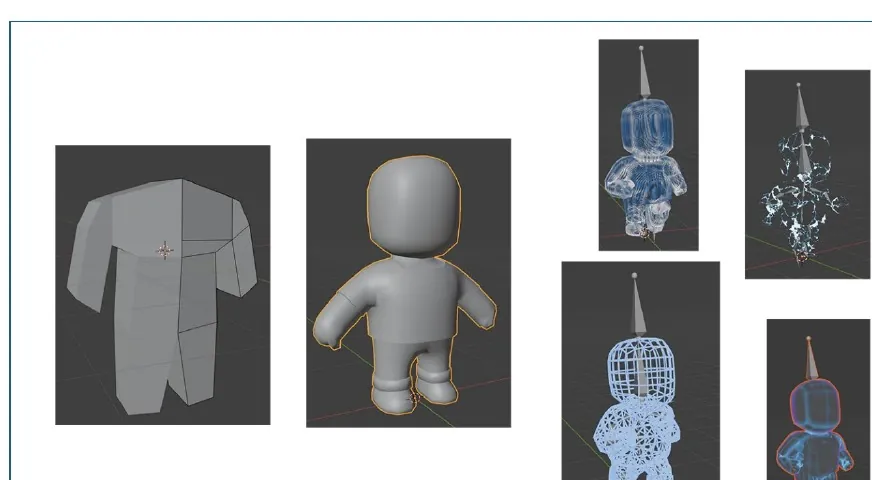
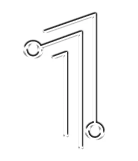
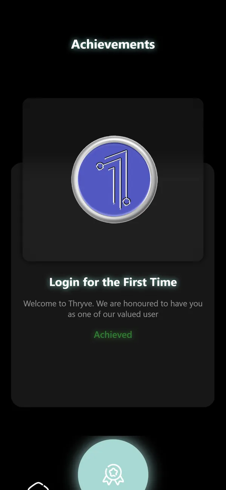
직접 빌드Figma로는 입력창 같은 실제 상호작용을 볼 수 없었습니다
처음으로 모바일 개발을 배워 React Native로 직접 만들었습니다. Mac이 없어 Swift는 쓸 수 없었고, 하나의 코드로 iOS와 Android에 모두 올릴 수 있는 쪽을 택했습니다. Appwrite로 회원가입과 인증을 연결했고, After Effects로 만든 스플래시 애니메이션은 영상 에셋으로 넣었습니다.
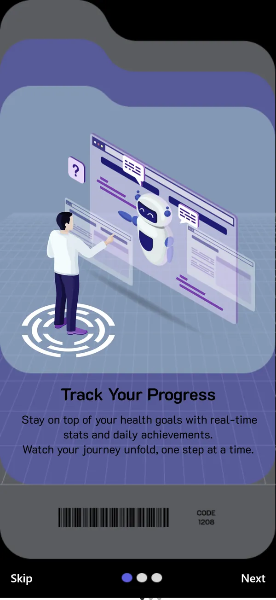
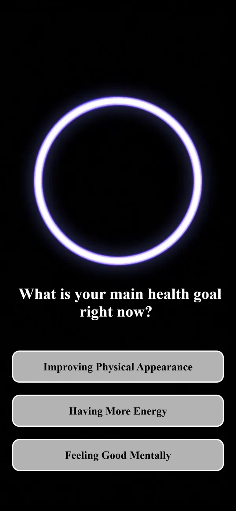
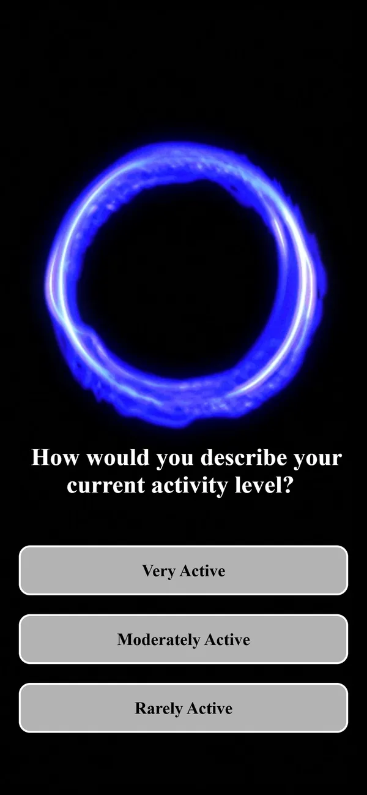
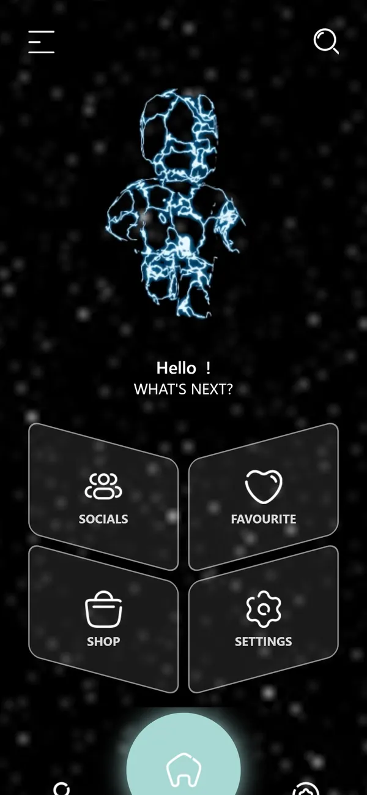

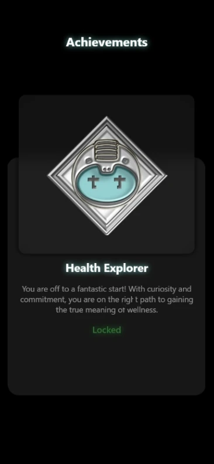
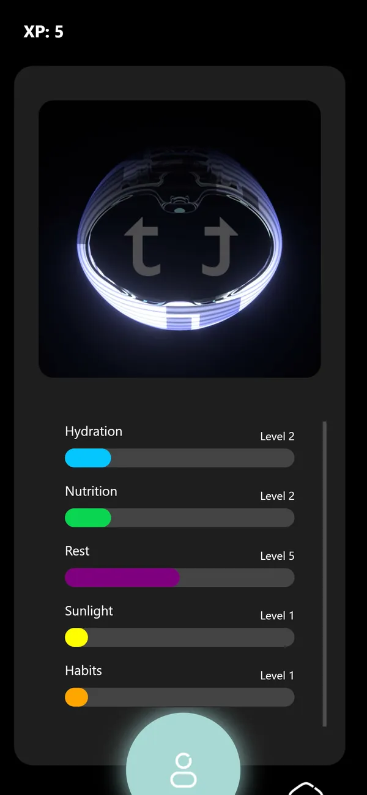
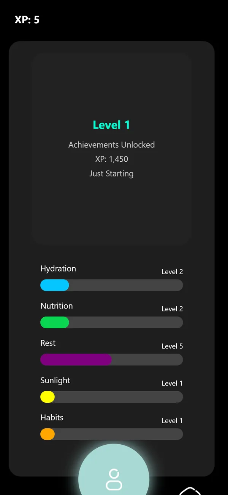
| 만난 제약 | 내린 판단 |
|---|---|
| React Native가 바로 쓰는 3D 형식(.glb)이 입힌 질감과 모디파이어를 지움 | 실시간 3D를 포기하고 아바타 애니메이션을 영상으로 내보내 삽입. 의도한 품질은 지키고 상호작용은 포기 |
| Expo Go가 3D 에셋을 지원하지 않음 | 기기에서 바로 보는 미리보기를 포기하고 PC 개발 환경에서 확인 |
| expo-video가 기본 재생 버튼을 숨기지 못함 | 이전 라이브러리 expo-av로 되돌림. 앞으로 지원이 끝날 위험은 기록해 둠 |
| 온보딩 슬라이더의 '다음' 동작이 불안정 | 진행 표시 점 3개를 빼고 흐름을 단순화 |
| 성장(프로필) 탭의 실시간 아바타 업그레이드 | 일정 안에 구현하지 못해 Figma 시안으로 대체 |